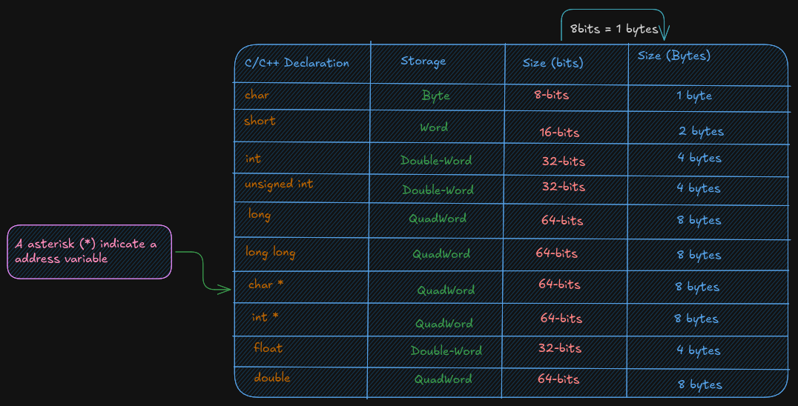
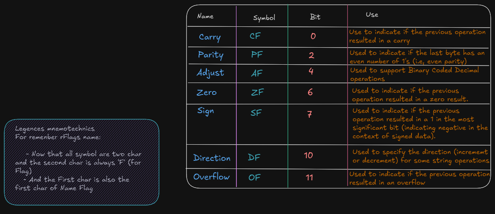

Introduction
This book is a reflection and a practical study of x86-64 assembly language programming on Ubuntu. It is based on the book “x86-64 Assembly Language Programming with Ubuntu” by Dr. Ed Jorgensen.
In each chapter I describe what I learned, include illustrations and solved exercises, and provide explanations to aid understanding.
Foreword
Foreword
This material is adapted and reorganized from the x86 folder to provide a coherent, interactive learning path about x86-64 assembly language. Content was reviewed for clarity and formatting.
Prerequisites
Prerequisites
Before using this book, ensure you have the necessary tools installed (for example, mdbook, an assembler, and a Linux environment). Basic familiarity with C or another systems language and the Linux command line is recommended.
0 - Why Assembly?
1.0 - Assembly and low level ?
Assembly language is a low-level machine specific langage, each instruction set processor
used it’s assembly in our case x86-64 not run on different processor.
A High-level language are translated into assembly who is used by processor to execute a program.
The assembly language help you to see how system ressources like memory, registers work .
It help to improve algorithm development skills, debugging by practicing because it requires more thought, more attention and nuanced approch . The function / procedure call, Input/Output instructions including the content and structure of function, a important significant implementations are best understood when working at a low-level.
In security world a fondamental mechanism of multi-processing concept a shared memory, threaded processing can help to nicely understood race condition and others bugs associated to this type of concepts.
1.1 - History and Begining
x86-64 instruction set for x86-64 class of processor using by 64-bit
operation system.
x86-64 is a CISC (Complex Instruction Set Computing)
We have multiple internals processor design philosophy
(x86_64, AMD64, x64) is a 64-bit extension of x86 instruction set
First annonced and available is AMD Opteron in 2003.
It introduces 64-bit mode and compatible mode, and new 4 level paging
mechanism. Compared to 32-bit it support virtual and physical memory,
and a number of GPR (General Purpose Register) from 8 to 16 .
SSE2 instruction in 64-bit mode permit a floatin-point arithmetic.
128-bit vector register (XMM registers), it can store one or two double precision floating-point number up to 4 single precision
- 64-bit mode instructions are modified to support 64-bit operands and 64-bit addressing mode.
- x86-64 architecture use a 16-bit and 32-bit applications to run on system
- Opteron, Athlon followed by X2, X3, X4 to indicate the number of cores and XLT models, same for Turion, Sempron, Phenom
It important to note that a reader would have a prerequist in C, C++ or Java, because many explation assume that reader is already familiar with programming concepts and with linux-based operating system and it’s command line interface.
If not i highly recommended you to do a C Pool of 42 School.
1 - Assembly and Low Level
1.0 - Assembly and low level ?
Assembly language is a low-level, machine-specific language: each instruction-set processor
uses its own assembly. In our case, x86-64 assembly does not run on a different processor.
High-level languages are translated into assembly or machine code, which the processor executes. Assembly language helps you understand system resources like memory and registers.
It also helps improve algorithm development skills and debugging through practice, because it requires more thought, attention, and a nuanced approach. Function and procedure calls, input/output instructions, and the structure of functions — important implementation details — are best understood when working at a low level.
In the security world, fundamental mechanisms of multiprocessing such as shared memory and threaded processing help to understand race conditions and other bugs associated with those concepts.
1.1 - History and Beginning
The x86-64 instruction set is used by 64-bit operating systems. x86-64 is a CISC
(Complex Instruction Set Computing) architecture. There are multiple internal processor
design philosophies.
(x86_64, AMD64, x64) is a 64-bit extension of the x86 instruction set. The first widely
available implementation was the AMD Opteron in 2003. It introduced 64-bit mode,
compatibility mode, and a new 4-level paging mechanism. Compared to 32-bit, it
supports larger virtual and physical address spaces and increased the number of general-purpose
registers (GPR) from 8 to 16. SSE2 instructions are available and are commonly used in
64-bit mode for floating-point arithmetic.
128-bit vector registers (XMM registers) can store one or two double-precision floating-point numbers or up to four single-precision numbers.
- 64-bit mode instructions were modified to support 64-bit operands and 64-bit addressing.
- x86-64 architecture can run 16-bit and 32-bit applications on compatible systems.
- AMD product names such as Opteron and Athlon were followed by X2, X3, X4 to indicate the number of cores; similar naming was used for Turion, Sempron, Phenom, and others.
It is important to note that readers should have prerequisites in C, C++, or Java, because many explanations assume familiarity with programming concepts and with Linux-based operating systems and their command-line interfaces.
If not, I highly recommend doing a C Pool from 42 School.
2.0 - Architecture Overview
2.1 -
A computer components include a CPU (Central Processing Unit), a RAM (Random Access Memory), a storage device (SSD / HDD), input / output devices (screenm keyboard, mouse).

A Big Picture of Von Neumann Architecture
A CPU or processor is a computer brain that contains a Control Unit (CU), main memory, and Arithmetic Logic Unit (ALU) A CPU includes all circuitry required to process input, store data, and generate output. It also follows program instructions that tell it which information to process and how to process it.
-
CU (
Control Unit): It is responsible for how data moves throughout the system, for redirecting all input and output flow, and for fetching instruction code. -
ALU (
Arithmetic and Logic Unit) : It a part of CPU who handles all computations like addition, subtraction, and comparisons, with logical operations, arithmetic operations and bit shifting operation -
Register : It’s a sort of highly fast Computer memory that is used to accept, store, and transport data A Processor register is the term used to define the registers that CPU uses (General Purpose Register) .
-
Accumulator : It store the result of calculation that ALU makes.
-
Program Counter: The memory address of the next instruction (the instruction that will be executed next). This next address is passed from the Program Counter to the Memory Address Register.
-
Memory Address Register :
MARstores the memory address locations of those instructions that are either to be fetched from memory or to be stored in memory. -
Memory Data Register :
MDRstores the instructions that are fetched from memory or any information that is to be transferred to and stored in the memory. -
Current Instruction Register :
CIRstores the recently fetched instructions while they wait for execution. -
Instruction Buffer Register :
IBRis used to hold instructions that are not immediately executed.
Input / Output Devices
The program or the data is read into main memory (RAM) from the secondary storage (HDD, SSD)
If an result are evaluated by a computer and saved in it , you can present them to user via output devices.
-
Buses: Data is sent from one part of a computer to another via buses which connect all key internal components to the memory and CPU.
-
Control Bus: It receive control commands from
CPU, as well as status signals from other devices, and uses them to control and coordinate all of the computer’s actions. -
Address Bus: It communicates between memory and the processor data address (not the actual data)
-
Data Bus: It relays information between the memory unit, I/O devices, and the processor.
2.2 Data Storage Sizes
The x86-64 architecture supports a specific set of data storage size elements. The storage size are a direct correlation to variable declarations in high-level language (C, C++, Rust)

2.3 CPU Registers
A CPU Registers or just register, is a temporary storage or working
location built into the CPU itself (separate)
A 64-bit General Purpose Registers (GPRs) are in number of 60, they can
be used by all 64-bits or some portion or subset accessed.
When a data want to used a element with sizes less than 64-bits (32-bit, 16-bit, or 8-bit) a specific part of this less sized register can be accessed by using a different register name like described here :

As show in the excalidrw diagram, the first 4 registers, rax, rbx, rcx,
rdx allow to accessed to 8-15 bits with the ah, bh, ch, and dh register names.
But ah is provided for legacy support.
A register save value the used to affected to them in hex base. By exemple if:
rax = 50.000.000.000 # value set to rax in decimal base (10)
rax = 0000 000B A43B 7400 # the eax value is saved in hex base (16)
ax = 50.000 # if ax is set to 50.000 in base decimal (10)
ax = C350 # the ax calue is save in hex base (16)
rax = 0000 000B A43B C350 # each value is 1byte, the total do 16 byte, and each section separate by space do 16-bit
# the total do 64-bit, here the lower 16-bit ax of rax is set the upper 48-bits are unaffected
# Note the change of ax to 7400 (16) to C350 (16)
al = 50 # al register is set to 50 (10), who is 32 (16) in hex
rax = 0000 000B A43B C332 # when the lower 8-bit al portion of the 64-bit is set the 56-bits are unaffected
For 32-bit register operations, the upper 32-bit (first 32-bit from left to right) is set cleared (set to 0)
RSP (Register Stack Pointer)
A rsp is a register who is not used for data or other uses but it used to point to the top of the stack.
RBP (Register Base Pointer)
A rbp is used as a base pointer during functions calls, it her only functions.
RIP (Register Instruction Pointer)
A rip is a special register used by CPU ro point to the next instruction to be executed.
So if rip points to the next instruction means that in debugger the rip point to a instruction who is not
already executed.
Flag Register (rFlags)
A flag register, rFlags is used for store status and CPU control information about the instruction that
was just executed.
The rFlag is directly updated (Status) by processor and not accessible by program,

### XMM registersThe XMM are set of dedicated registers used to support 32-bit and 64-bit floating point
operations and Single Instruction Multiple Data (SIMD) instructions.
SIMD allow a single instructions allow a single instruction to be applied
simultaneaously to to multiple data items, it help to increase a performance.
Cache Memory
Cache memory is a small subset of the primary storage or RAM located in the
CPU chip. If a memory location is accessed, a copy of the value is placed
in the cache*.
A memory read involves sending the address via the bus to the memory controller,
which will obtain the value at the requested memory location, and send it back
through the bus. Comparatively, if a value is in cache, it would be much faster
to access that value.
A cache hit occurs when the requested data can be found in a cache, while a cache miss
occurs when it cannot. Cache hits are served by reading data from the cache, which is
faster than reading from main memory. The more requests that can be served from
cache, the faster the system will typically perform.

Main memory
Memory can be viewed as a series of bytes, one after another. That is, memory is byte
addressable. This means each memory address holds one byte of information. To store
a double-word, four bytes are required which use four memory addresses.
Additionally, architecture is little-endian. This means that the Least Significant Byte
(LSB) is stored in the lowest memory address. The Most Significant Byte (MSB) is
stored in the highest memory location.
For example, assuming the value of, 5,000,000 (10) -> 004C4B40 (16), is to be placed in a
double-word variable named var1.
For a little-endian architecture, the memory picture would be as follows:
Based on the little-endian architecture, the LSB is stored in the lowest memory address
and the MSB is stored in the highest memory location.
2.5 Memory Layout
The general memory layout for a program is as shown:
The reserved section is not available to user programs. The text (or code) section is
where the machine language (i.e., the 1’s and 0’s that represent the code) is stored. The
data section is where the initialized data is stored. This includes declared variables that
have been provided an initial value at assemble-time. The uninitialized data section,
typically called BSS section, is where declared variables that have not been provided an
initial value are stored. If accessed before being set, the value will not be meaningful.
The heap is where dynamically allocated data will be stored (if requested). The stack
starts in high memory and grows downward.
Memory Hierarchy
In order to fully understand the various different memory levels and associated usage, it
is useful to review the memory hierarchy. In general terms, faster memory is more
expensive and slower memory blocks are less expensive. The CPU registers are small,
fast, and expensive. Secondary storage devices such as disk drives and Solid State
Drives (SSD’s) are larger, slower, and less expensive. The overall goal is to balance
performance with cost.
An overview of the memory hierarchy is as follows:
Where the top of the triangle represents the fastest, smallest, and most expensive memory. As we move down levels, the memory becomes slower, larger, and less expensive. The goal is to use an effective balance between the small, fast, expensive memory and the large, slower, and cheaper memory.
Based on this table, a primary storage access at 100 nanoseconds is 30,000 times faster than a secondary storage access, at 3 milliseconds . The typical speeds improve over time (and these are already out of date). The key point is the relative difference between each memory unit is significant. This difference between the memory units applies even as newer, faster SSDs are being utilized.
3.0 Data Representation
In a computer, data representation is how information is stored. It differs depending on what you want to store; for example, the method used to store integers is different from the method used to store floating-point numbers and strings.
Different bases are used here (binary, decimal, hex) to represent a number. Ex:
19 = 19 (10) = 13 (16) = 0x13
3.1 Integer Representation
The computer represents numbers in binary (1s and 0s). A number or variable can be stored in a limited amount of space provided by the computer. This directly impacts the size or range of numbers that can be represented.
Ex:1 byte (8 bits) can represent 2^8, or 256, different numbers.
These 256 numbers (0-255) can be unsigned (all positive).
The signed range is (-128 to +127).
So if a number that we want to represent need more space to be represented a larger size must be used. Like :
- A
word16-bits for 65.536 (0 - 65.535) for signed and (-32.768 - 32.767) for unsigned value - A
double-word32-bits for 4.294.967.296 (0 - 4.294.967.295) for signed and (-2.147.483.648 to +2.147,483,647) for unsigned value
It is important to know whether a value can be represented; you need to know the size of the storage element (byte, word, double-word, quadword) being used and whether the values are signed or not. Signed values use a standard binary representation. Unsigned values use a two’s complement representation.
For example, the unsigned byte range can be represented using a number line as follows:
For example, the signed byte range can be represented using a number line as follows:
When we examine a binary file with a debugger, it is difficult to know whether a variable in memory is signed or not because unsigned values have a different, positive-only range than signed values.
For example, when the unsigned and signed values are within the overlapping positive range (0 to +127):
- A signed byte representation of 12 (10) is 0x0C (16)
- An unsigned byte representation of 12 (10) is also 0x0C (16)
When the unsigned and signed values are outside the overlapping range:
- A signed byte representation of -15 (10) is 0xF1 (16)
- An unsigned byte representation of 241 (10) is also 0xF1 (16)
Note: if your number contains a group of 4 bits (1111), that is 15 in decimal.
Two’s Complement
To find a two’s-complement representation for negative values:
- Take the one’s complement (negate all bits).
- Add
1(binary addition).
For example, to represent -9:
- Start with the positive value
9. - Convert it to binary.
- Invert all bits (change
1to0and0to1). - Add
1.
See the example below:
3.3 Floating-point Representation
The representation of floating-point numbers differs by format. The representation shown here is IEEE 754 32-bit floating-point
After these calculations, the next step is to calculate the biased exponent, which is the exponent from the normalized scientific notation plus the bias. The value for the IEEE 32-bit floating-point standard is 127, and the result should be converted to 8 bits (1 byte) and stored in the biased exponent portion of the word.
A 64-bit floating-point standard representation is the same as 32-bit,
however the format allows an 11-bit biased exponent with a bias of 1023
It is possible that when a value is interpreted as floating-point and it does not conform to the standard (either 32-bit or 64-bit), then it cannot be used as a floating-point value. This can occur if an integer representation is mistakenly interpreted as a floating-point value, or when a floating-point arithmetic operation (add, subtract, multiply, divide) produces a value that is too large or too small to represent.
An incorrect format or an unrepresentable value is referred to as NaN (Not a Number).
3.4 Characters and strings
Computer memory is designed to store and retrieve numbers.
So symbols (non-numeric data like characters) are assigned numeric values.
This is the functionality of the ASCII (American Standard Code for Information Interchange) table.
For example, the “A” character has the value “65” in decimal and “0x41” in hexadecimal.
It is important to distinguish between the “2” character and the integer 2.
Unicode is an improvement over ASCII because it supports many languages.
A string is a series of ASCII characters terminated with NULL (a non-printable ASCII character).
It is used to mark the end of strings.
And, as described, strings can contain numeric symbols, but they are not considered numeric numbers. A char uses 1 byte, so each character represents one byte plus a NULL character. An integer uses a minimum of 2 bytes.
4 - Assembly Programming (Draft)
Program Format
An assembly file contains several parts:
- Data section where initialized data is declared and defined.
- BSS section where uninitialized data is declared.
- Text section where code is placed.
Note that assembly uses a semicolon ; for comments; any text after ; is ignored.
Numbers can be specified in decimal, hex, or octal.
The default base is decimal.
All hex or base-16 values must be preceded with 0x.
For octal or base-8 values, use a q suffix like 777q.
A constant is defined with the equ keyword; its value cannot be changed during
program execution. It does not have an associated memory location or a fixed size
(byte, word, double-word); the size depends on the value.
<name> equ <value>
Ex:
SIZE equ 10000 ; Could be used as word or double-word but not a byte
Data Section
The Data section contains all initialized variables and constants. A naming
specification for your variables is simple:
It can start with an underscore or letter, followed by letters or numbers, including some special
characters.
<variablename> <dataType> <initialValue>
Refer to these tables for a series of examples using various data types.

See the example below for common assembler directives used for initialized data declarations.
Here d means define.
bVar db 10 ; byte variable
cVar db "H" ; single character
strng db "Hello World" ; string
wVar dw 5000 ; 16-bit variable
dVar dd 50000 ; 32-bit variable
arr dd 100, 200, 300 ; 3 element array
flt1 dd 3.14159 ; 32-bit float
qVar dq 1000000000 ; 64-bit variable
The value specified here must fit the specified data type; for example,
a byte variable set to 500 would generate an assembler error.
BSS section
The BSS section contains uninitialized data or variables.
It uses the same declaration pattern as the Data section.
<variable> <resType> <count>
The supported data types are as follows:

The following are common assembler directives for uninitialized data declarations.
bArr resb 10 ; 10 element byte array
wArr resw 50 ; 50 element word array
dArr resd 100 ; 100 element double array
qArr resq 200 ; 200 element quad array
Here res means reserve, and the last character after res tells you what type
of variable you want to reserve space for without allocating memory.
Text Section
The code is placed in the text section, and instructions are specified line by line.
The text section includes some headers or labels before the code that defines the initial program
entry point.
global _start
_start:
No special label or directives are required to terminate the program. A system service is used to inform the operating system that the program should be terminated and the resources, such as memory, recovered and re-used.
; Simple example demonstrating basic program format and layout.
; Ed Jorgensen
; July 18, 2014
; ************************************************************
; Some basic data declarations
section .data
; -----
; Define constants
EXIT_SUCCESS equ 0 ; successful operation
SYS_exit equ 60 ; call code for terminate
; -----
; Byte (8-bit) variable declarations
bVar1 db 17
bVar2 db 9
bResult db 0
; -----
; Word (16-bit) variable declarations
wVar1 dw 17000
wVar2 dw 9000
wResult dw 0
; -----
; Double-Word (32-bit) variable declarations
dVar1 dd 17000000
dVar2 dd 9000000
dResult dd 0
; -----
; quadword (64-bit) variable declarations
qVar1 dq 1700000000
qVar2 dq 900000000
qResult dq 0
; ************************************************************
; Code Section
section .text
global _start
_start:
; Performs a series of very basic addition operations
; to demonstrate basic program format.
; ----------
; Byte example
; bResult = bVar1 + bVar2
mov al, byte [bVar1]
add al, byte [bVar2]
mov byte [bResult], al
;------------
; Word example
; wResult = wVar1 + wVar2
mov ax, word [wVar1]
add ax, word [wVar2]
mov [wResult], ax
;------------
; Double-Word example
; dResult = dVar1 + dVar2
mov eax, dword [dVar1]
add eax, dword [dVar2]
mov [dResult], eax
;------------
; QuadWord example
; qResult = qVar1 + qVar2
mov rax, qword [qVar1]
add rax, qword [qVar2]
mov [qResult], rax
; ************************************************************
; Done, terminate program.
last:
mov rax, SYS_exit ; Call code for exit
mov rdi, EXIT_SUCCESS ; Exit program with success
syscall
5 - Examples and Exercises (Draft)
Toolchain
In general, the set of programming tools used to create a program is referred to as the toolchain. The toolchain used here consists of the following:
- Assembler
- Linker
- Loader
- Debugger
5.1 - Assemble / Link / Load Overview
The source code file passes through multiple stages before becoming an executable program
during the assemble, link, and load process.
The human-readable source code file is converted into an object file by the
assembler, which is then transformed into an executable by the linker, and the
executable is loaded into memory with the help of loader.
Assembler
The assembler is a program that will read an assembly language source code containing assembly instruction in input file and convert the code into a machine language binary (bytecode).
During this process the comment are removed and variable names and label are converted into appropriate addres (as required by the CPU during execution)
The assembler used here is yasm.
yasm -g dwarf2 -f elf64 example.asm -l example.lst
-g dwarf2: it used to specify to assembler to include debugging information in object file (.o)-f elf64: Informs the assembler to create the object file inelf64format (which is appropriate to 64-bit Linux based-system)axample.asm: is a assembly source file in input.-l example.lst: in form assembler to create a list file namedexample.lst
But what is a list file? A list file shows the line number, the relative address, the machine-language version of the instruction (including variable references), and the original source line. This information is useful when debugging.
36 00000009 40660301 dVar1 dd 17000000
37 0000000D 40548900 dVar2 dd 9000000
38 00000011 00000000 dResult dd 0
- Line 36
- relativ address :
0x00000009stored in the data area - double-word variable:
dVar1requires four-bytes. - next address is
0x0000000DsodVar1uses a0x00000009,0x0000000A,0x0000000B,0x0000000C 0x40660301is the value in hex, as placed in memory. A17000000is0x01036640.in hex. Remember that the architecture used here is little-endian; theLSB(0x40) is placed in the lowest memory address.- A
0x40is placed at0x00000009next0x66is placed in address0x0000000A
For example, a fragment of the list file text section, excerpted from the example program in the previous chapter is as follows:
95 last:
96 0000005A 48C7C03C000000 mov rax, SYS_exit
97 00000061 48C7C300000000 mov rdi, EXIT_SUCCESS
98 00000068 0F05 syscall
- Again, the number to the left are the line numbers, the net number
0x0000005Ais the relative address if where the line of code is placed. - The next number
0x48C7C03C000000is the machine language version of instruction, in hex , that the CPU reads and understands. - The rest of the line is the original assembly language source instruction.
- The label
last:does not have a machine language instruction, it not a executable instruction.
Two-Pass Assembler
The assembler will read a source code and convert it in bytecode who it translate in binary (understand by CPU) The 1’s and 0’s are referred to as machine language. This relationship between assembly code and binary readable language means that machine language can be converted back to human readable, but of course the comment, variable names and label names are missing, so the resulting code can be very difficult to read.
Each line read by the assembler has her instruction generated, but in case when a instructions is a jumps like If statements or unconditional jumps, it not possible to perform the convertion of this instructions.
Ex :
mov rax, 0
jmp skipRest
...
...
...
skipRest:
Reading line by line a assembler cannot know if a skipRest is defined or just exist when it read a line when it called, the solution for that is to read a file twice, it know by name of two-pass assembler.
Fisrt pass
This step vary of the design specific assembler, but several basic operations performed is:
- Create symbol table
- Expand macros
- Evaluate constant expressions
A macro is a program element that is expanded into a set of programmer predefinned
instructions.
A constant expression is an expression composed entirel of contants.
By example if a constant is used in one line do a operations, if we know from begenning that it was
declared this line can be read, understand and executed without problem.
Ex:
mov rax, BUFF+5
Second pass
The steps taken on the second pass vary based on design of the specific assembler. The differents basic operation performed on the second pass include :
- Final generation of code
- Creation of list file (if requested)
- Create object file
The generation of code is about to the conversion of the assembly language into the CPU executable machine instruction. Knowing that a one-to-one correspondance, is used for transform instructions (instructions that do not use symbols on either the first or second pass)
A based assembler design can help to done code generation be done on the first or all done on the second pass. In much case a final generation is performed on second pass and require using the symbol table to check program symbols and obtain the appropriate addresses from the table.
Assembler Directives
Assembler directives are instructions to the assembler that direct the assembler to do something. This might be formatting or layout. These directives are not translated into instructions for the CPU.
Linker
The linker, sometimes referred to as linkage editor, will combine one or more object files into a single executable file including any neccesary libraries . A example using example file from previous chapter with GNU gold linker.
ld -g -o example example.o
-gis used to included debugging information in the final executable file.-ospecifies to create a executable file name example (with no extension) when the-ois ommitted the output file is nameda.outThe linker reader aexample.ofile who is input here, note that you can name you file like what you want and not need to have the same name as any of the input object files.
It is also possible to link multiple object files.
ld -g -o example main.o example.o
When a function are located in external source file, any function not in the current source file must be declared as extern . Variables, such as global variables, in other source files can be accessed by using the extern statement as well, however data is typically transferred as arguments of the function call.
Linking Process
The object files and library routines are combined into a single executale module. As part of combining the object file, the linker must adjust the relocatable addresses as necessary.
Assuming there are two source files, the main and secondary source file
boths of which have been assembled into object file main.o and funcs.o .4
After assembles the calls to routines outside of file being assembled are declared with the external
assembler directive.
The code is not available for an external reference and such references are marked as external in the object file. The list file will show an R for such relocatable addresses. The linker must satisfy the external references. Additionally, the final location of the external references must be placed in the code. For example, if the main.o object file calls a function in the funcs.o file, the linker must update the call with the appropriate address as shown in the following illustration.
Here fnc1 is external to main.o it inside a funcs.o file and it marked with the R.
It started to relative address (0x100), and when it was combined with main.o the final executable
it adapt her and take 0x400 like address, and the linker insert this address into the call statement
in the main in order to complete the linking process and ensure the function call work correctly it
work with the relocatable adresses for both code and data.
Dynamic Linking
The linux Operating system supports dynamic linking who is represented by a .so (shared object file), which allows for postponing the resolution of some
symbols until a program is being executed.
The actual instructions are not placed in exacutable file and instead, if needed, resolved and accessed at run-time.
This approach offers two advantages:
- Commonly used libraries can be stored in a single location instead of being duplicated in every binary.
- If a bug in a shared library is fixed, programs that use it dynamically will benefit from the fix on next run.
- Disadvantages
- When a library is updated, the executable may break because it depends on the previous library version.
- A program using its own library must be trusted; replacing components can introduce compatibility issues.
Assemble / Link Script
For not wast a time for type always the command to assemble and link with ld it possible to write a script who do all
assembly and linking process
See below:
#!/bin/bash
# Simple assemble/link script
if [ -z $1 ]; then
echo "Usage: ./asm64 <asmMainFile> (no extension)"
exit
fi
#Verify no extensions were entered
if [ ! -e "$1.asm" ]; then
echo "Error, $1.asm not found."
echo "Note, do not enter file extensions."
exit
fi
# Compile, assemble, and link.
yasm -Worphan-labels -g dwarf2 -f elf64 $1.asm -l $1.lst
ld -g -o $1 $1.o
This script file can be name asm64 we don’t need obligatory a extension here because on linu
all is file.
chmod +x asm64 # to give execution right to script file
Execute it:
./asm64 example # to compile a file and give her the name example note that you can use another filename
Loader
The loader is a part of our opereationg system who load the file from secondary storage (Hard drive) to primary storage (RAM), it create a new process for executable, and load the code in memeory, the program is run when the executable is invoked
./example # the previous file created after linking and assembley
Debugger
The debugger is used for control program execution of program, if during execution
nothing is printed to user it possible to use debugger to check a result .
Multiple debugger exist but the GNU product is appreciated for our exporation.
So we used a GNU DDD who is a graphical interface for GDB.
Exercice
Style Guide
Follow the project’s style conventions for headings, prose, code blocks, and links. Prefer title case for headings, italics for terms, and hard wrap at 80 characters. Use relative links for intra-book references and bash highlighting for shell examples.